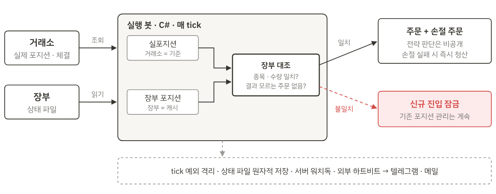

AI-assisted · 개인 프로젝트 운영 중
AI 에이전트로 만들고 대조 테스트로 검증한 24시간 자동매매 봇

AI 활용
- 구현과 C# 이관은 Claude Code, 일부 기능은 Codex가 맡고 백테스트 해석은 ChatGPT로 교차 검토했습니다. 커밋 509개 중 490개를 AI와 함께 썼습니다.
- AI가 지킬 규칙을 CLAUDE.md · AGENTS.md로 정리했습니다. 사고에서 나온 방어 코드는 지우지 않기, 모르는 값은 0이 아니라 null로 두기 같은 것입니다.
문제
- 한 전략의 주기 실행(tick)에서 난 예외 하나가 스케줄러 전체를 72분 동안 멈춰, 다른 전략의 청산까지 함께 멈췄습니다.
- 장부에 수량 0인 빈 포지션이 남아 대조 단계가 예외를 던졌고, 신규 진입이 8일 동안 잠겼습니다.
해결
- tick마다 예외를 격리해 하나가 실패해도 나머지는 돌게 하고, 같은 실패가 반복되면 텔레그램으로 알리게 했습니다.
- 거래소를 기준, 장부를 캐시로 두고 매 tick 대조해 어긋나면 신규 진입만 잠급니다. 장부는 임시 파일에 쓴 뒤 이름을 바꿔(double buffer + swap) 쓰는 도중 꺼져도 깨지지 않습니다.
261건Python과 C#의 7년치 거래가 모두 일치
1,800+장애 재현을 포함한 자동 테스트
490 / 509AI와 함께 쓴 커밋